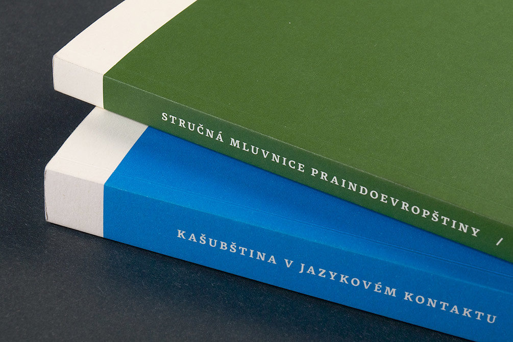
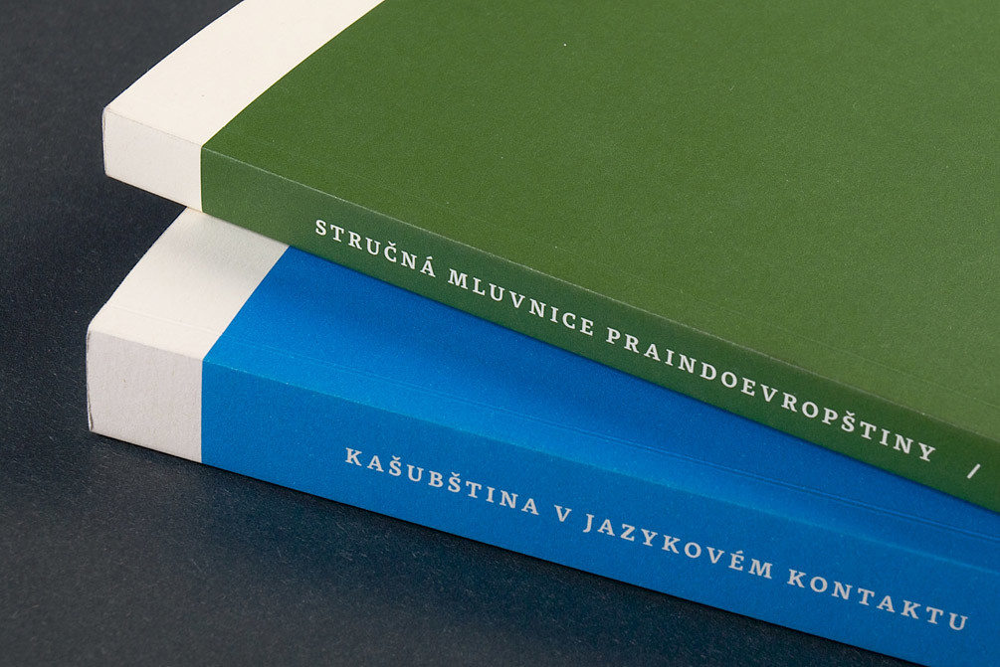

Rosetta Binder and specimens
Aisha Latin, Avory PE, Eskorte Latin, Gitan Latin, Nassim Latin, Nassim Arabic, Neacademia, Marlik, Skolar Sans PE
Our binder and specimens were awarded in the European Design Awards 2020.
The time has come for our series of specimen brochures to get a classy binder! Black cloth, matte black mechanical parts, and subtle embossed lettering. This is a set of a limited-edition binder, a complete set of our brochures, and a brand new Adapter poster. The nine brochures published so far are included: Aisha, Avory, Eskorte, Gitan, Nassim, Nassim Arabic, Neacademia, Marlik, and Skolar Sans.

Another book in the Samica series is an anthology of the Saami poetry. From Olaus Sirma, who heralds the Sami for the first time in Herder’s folk song collection, to Nils-Aslak Valkeapää, the great innovator of Sami art and culture in the 20th century, to the promising young Niillas Holmberg, this volume brings together almost fifty poets and invites everyone interested in Northern Europe and poetry on a journey of discovery through an as yet unknown literary landscape.
The book has been carefully designed and typeset using our typeface Skolar.
The book Imagine human rights presents the thirty articles of the Universal Declaration of Human Rights in the six official languages of the United Nations. It juxtaposes the human rights articles with a multitude of artworks.
This beautiful, multilingual publication uses our Nassim for all Arabic texts, next to František Štorm’s Baskerville Original for Latin and Cyrillic, and New Hanzi Renwen Song for Chinese.
Imagine human rights is a project by Andrea Fuchs, Manfred Nowak, and Petra Stelzer.
The Aisha Latin specimen belongs to our ongoing series of brochures representing individual type families from our library. Technical specs, clean text settings, snazzy details, and a colourful palette of possible applications.
See Aisha’s microsite
Download the specimen in PDF
The specimen was designed by Anna Giedryś and Kamil Kurzajewski; 16 pages, two-colour offset printed, on Munken Lynx White 130 g/m2.
The Dublin International Film Festival is Ireland’s premier feature film festival. Launched in 2003 it set out to bring the best of Irish and international filmmaking to Dublin. Their new website uses Skolar Sans throughout the design, on every level of typographic hierarchy. Developed by award-winning Irish web design studio Pixel Design.

This 300-page, bilingual collector’s item about the famous large Hermes head stamps exhibits the strengths of a well-developed type system with extensive language support. Skolar PE, and Skolar Sans PE are used for headings, body-copy, and footnotes throughout the Greek, and English edition. The publication is very technical and full of micro-typographical details, an ideal environment for the Skolar family.
Neacademia is featured in Paul Shaw’s beautiful examination of typefaces steeped in history. The book maps contemporary digital fonts with origins in the past to their analogue predecessors. The masterpieces of Nicolas Jenson, Claude Garamont, Robert Granjon, William Caslon, John Baskerville, Giambattista Bodoni, Firmin Didot, and others are presented alongside some lesser known, but not less important works – like the type cut for Aldus Manutius’ 1499 edition of Hypnerotomachia Poliphili, which served as one of the models for the development of Neacademia.
Published by Thames & Hudson Australia.
Nassim was used for this visually striking set of postcards and posters, contributing towards intercultural exchange, and showing its display qualities. The Austrian project was born from the refugee movement that is taking place in Europe since 2015. Many of the people fleeing from war speak Arabic, a simple »Thanks« or an invitation to a coffee could be the first step towards a better understanding between the different cultures and languages.
Awarded at the European Design Awards 2017, all proceeds donated to »Kulturen in Bewegung« (cultures in motion).
Arek was chosen for a leading role in the visual identity for Brno-based theatre Divadlo Polárka. Aiming at young audiences, the theatre uses a colourful array of printed and digital ephemera; posters, programs, leaflets, and graphics.
Divadlo Polárka was established in 1999. While the plays are primarily written and directed to appeal to children, it also has something in store to entertain (the often accompanying) adults. Suitable for ages 3 to 103.
Concept and design by Atelier Simpléz, Brno.

Neacademia carries the punchy rhythms and visceral imagery of Robin Dunford in her latest poetry collection, Half Rock. Andrew Steeves of Gaspereau Press chose the typeface, which he considers to be “hands-down the best Griffo/Aldine digital revival” in his toolbox, to be printed from photopolymer plates, and used throughout the book. A love-letter to the art of traditional printing.
Designed and typeset by Andrew Steeves, printed on handmade paper at Gaspereau Press, Kentville, Nova Scotia.
Skolar Devanagari in use for the Gandhi Peace foundation, designed by Indian studio By Two Design. The book, Jal Thal Mal by Sopan Joshi, was written with the intent of explaining the concept of sanitation in its entirety. It introduces the subject through cultural, political and social contexts. The texts are accompanied by intricate black and white illustrations by Somesh Kumar.
Ahmedabad/Bangalore, India. Photos: By Two Design studio.
Skolar Sans takes a key position on the website of the Växjö Lakers, a team of Sweden’s top-level ice-hockey league, SHL. The typeface is employed throughout the site in body text, and game statistics. The design utilizes two of Skolar Sans’ strongest qualities, versatility and language support. A real advantage for the typographic complexity of sports sites.
Eskorte and Nassim team up with Miso in this identity for huna/k, a culture Festival that set out to create a bridge between the Arab, and the Western world. In Arabic, the letter kaf (ك) is the only difference between here (huna) and there (hunak). All of the visuals and ephemera are connected, flyers, programs, and posters interlinked. The program can be read in the other language, from right to left in Arabic, or from left to right in German. Printed with silver spot color. Developed by JAC-Gestaltung in cooperation with Fadi Abdelnour.
Photos by JAC-Gestaltung.
Neacademia shows its affiliation for letterpress applications in this chapbook by Nova Scotia’s Gaspereau Press. Fricatives, by Gillian Sze is part of the Devil’s Whim Chapbook series, focusing on Canadian authors from various fields. Printed in a limited edition of 300 copies. Designed and typeset by Andrew Steeves.
Andrew Steeves relied on Neacademia for the heavy-lifting in John Steffler’s 333-page strong novel German Mills, the story of an 18th-century fortune-seeker, who’s leaving behind his German home to embark on a journey into the American wilderness. The typeface is used for the jacket and throughout the book, where the skilfully placed typography is accented with woodcut illustrations by Jack McMaster. The composition of the cover is based on a woodcut title page from a 1788 German-language almanac printed in Halifax.
Jackets printed on a Vandercook press using St. Armand Canal paper. Gaspereau Press, Kentville, Nova Scotia.
The multidisciplinary festival Multiple Memories focuses on the cultural issues of migration. The editorial design and visual identity by JAC design studio uses Arek by Khajag Apelian.
Photos by Hannes Woidich.
Conceived by Rohan Murty and planned and published by Harvard University Press, the Murty Classical Library of India is a bold project to revive Indian classical literature and make it widely available and accessible. The goal is to publish more than 500 books of classical Indian literature over the course of the next 100 years! The concept and beautiful design of the books was done by Rathna Ramanathan. A range of new Indian types were specially commissioned from Fiona Ross and John Hudson of Tiro Typeworks. The Arabic type used for Persian is Nassim by Titus Nemeth, presented here in the book The History of Akbar. The Latin is Henrik Kubel’s Antwerp.

NOUS magazine is a Manchester based publication dedicated to conversations about mental illness. With each issue NOUS is taking its readers on a journey in three parts, featuring short stories, interviews, poetry, and essays exploring one chapter of our mental health. Published bi-annually with changing topics related to mind culture, philosophy, mental illness, and the everyday. The magazine is printed by Team Trident Press in ever-changing dual colour variations.
A restaurant guide, recipe book and an affectionate study of a unique location of North Dortmund – all rolled into one. The book shows the inhabitants of Nordstadt in their own four walls, and introduces restaurant owners and proprietors amidst the atmosphere of cafés, bistros, pubs and bars. The book, designed by JAC design studio, using our Skolar and Brandon Grotesque by Hannes von Döhren, won the prestigious Red Dot design award!
Photos by Hannes Woidich.
Pražské příběhy is probably the most complete description of the social history of Prague’s districts in the nineteenth, and twentieth century. By narrating the story of Malá Strana, uncovering unknown, and unrecorded fates, house after house, street after street, Dan Hrubý tries to preserve the vanishing memory of people and their lives. Skolar is used throughout the book, the texts are accompanied by extraordinary images from the authors own unique archive.
Design and photos by Helena H. Zahrádecká
The Public Secrets photo book by Visvaldas Morkevičius is a collection of urban experiences from the city’s nighlife to private spaces. We learned to love Tom Mrazauskas’s ultra-minimalistic design approach. It is a very minor, but one of the first recorded uses of Skolar Sans.
Photos by Visvaldas Morkevičius.
Specimens are boring! Creative minds don’t want to just look at pretty pictures, they want to draw their own stuff in the first place. So we talked to our friend, famous Czech book designer Martin Pecina (aka Typolenin) and he came up with a dos-à-dos sketchbook/primer with ten short texts on typographic refinements everyone should know about (small caps, case-sensitive punctuation, figures, ligatures, kerning, optical sizes, stylistic sets, swashes, contextal alternates, non-Latin scripts). Simple coloured glue binding, emboss, and pink colour. Martin’s sketches on type, your sketches of type.
You can buy it in the merchandise section.
This novel, situated in the 1950s on a small island along the southern coast, tells a life-changing story of three sisters. The author, Mirjam Kristensen, is an exquisite prosaist and storyteller. The book designed by Frode Bo Helland, is set in Neacademia, and published by Forlaget October.
Commissioned by the Government of Mauritania to broaden awareness and understanding, and to help promote commerce and tourism, this trilingual, large format, coffee-table book was designed by John Hubbard and published by Ewrks Media Inc. It uses Nassim by Titus Nemeth for Arabic and English and Le Monde Sans by Jean François Porchez for the French.
Parenthesis is a journal publication that conveys bookbinding, typography, collecting, publishing and related areas. It is published twice a year, with a Fall and a Spring issue and supplied to members of the Fine Press Book Associations. Each issue is unique in its design and produced alternatively between North America and Europe. This issue was designed and typeset by Andrew Steeves in Neacademia by Sergei Egorov and printed at Gaspereau Press, Kentville, Nova Scotia. Current and past issues can be directly ordered from FPBA website.
Samica is a series of multilingual and interdisciplinary books with contributions to the languages, literatures, and cultures in Sápmi, the settlement area of the Saami between Finland, Norway, Sweden and Russia.
Grüße aus Lappland and Johan Turi are just two titles from the much bigger series. The first one being a 180-page statement against the homogenization of Nordic countries. The second describes the life of Johan Turi, a wolf hunter and reindeer keeper who dreams of publishing a book. He is considered the first Sami-speaking author. Both publications make an extensive use of our typeface Skolar.
Design and illustrations by Philipp von Rohden. Typesetting by Iris Perkmann, Joshua Wilbur. Published by the Scandinavian Institute of Freiburg University.
Eight of text type families presented in a fancy old-school poster designed by Anna Giedryś. It is printed in gold and black colours on Munken Pure and distributed in a transparent sleeve.
Also presented is an unreleased typeface Prakashan by Alessia Mazzarella and Huronia by Tiro Typeworks.
Charles University in Prague is publishing a series focussing on Linguistics. The book covers have been designed by František Štorm, the contents have been typeset by studio Lacerta. Skolar PE has been put to great use in these highly structured academic texts.

 

This hardbound book, published by Wydawnictwo Naukowe WSPiA, contains essays on contemporary German literature since 1989. The authors seek answers to the question: did the union euphoria, the association disappointment, the East German “ostalgia”, the western apolitical, sometimes defeatist attitude, a retreat into the personal sphere of the 90s, give way to newer perspectives? Book design by Bartłomiej Bączkowski.


The Visual Schoolbook (Elementarz Wizualny) provides educational material for the youth, high-school students in particular, about the subtleties of graphic design. The book and its contents have been designed and written by Paulina Urbańska, in an attempt to fill the gap in educational publications for the young. The book was selected among the best 40 graduation projects from Poland, Czech Republic, Slovakia, and Hungary.
Hand to Type is the latest book from renowned design writer and editor Jan Middendorp, and it seems once again he has delivered a remarkable book. We are especially proud to see Aisha featured on a full page in the author’s introduction even though it is ‘just’ a type showing, not actual use. Published and available from Gestalten.


Studio Bedow used our typeface Skolar in their beautiful exhibition catalogue for Swedish artist Kjell Strandqvist. Presented at the opening of the exhibition Målningar 2008–2013 at Konstakademien in Stockholm, the catalogue is printed in an edition of 300 signed and numbered copies. You can purchase it here.

This book arose from the invitation to mount a substantial exhibition at the ATypI conference in Hong Kong in 2012. It was published by the St Bride Foundation and contains essays by renowned specialists in the field of non-Latin type design, with lots of unique material from the Non-Latin Type Collection at the University of Reading. The exhibition was curated by Fiona Ross and Vaibhav Singh, who also edited the book. It was designed by Vaibhav Singh and Paul Luna and the text is set in Skolar.
Get your copy from St Bride Library shop.
Hand made products, selected quality and a small family firm characterise the Witt family coffee roasting company. JAC design studio made these attributes the focal point of the Privatrösterei’s visual style. The private coffee roaster’s company logo (a reminiscence of coat of arms) is accompanied by typefaces Lisa from Underware and Skolar by David Březina.
Photos by Hannes Woidich.

“You are not disturbing at all. It’s nice when something happens around here.” The inspiration for the campaign of the Rundlauf Bochum 2013 art and culture festival originates from an elderly lady living in the Bochum suburb. The successful connection between art and the population was incorporated by JAC design studio into the design which uses lively pink and black combination together with Futura by Paul Renner and Skolar by David Březina.
Photos by Hannes Woidich.
This debut book from Dana Mills portrays contemporary rural life with unsentimental clarity. It presents a collection of short stories balancing between overwhelming circumstances, strange beauty and hope. For this beautiful yet simple design Andrew Steeves from Gaspereau Press selected Sergei Egorov’s typeface Neacademia. It was awarded in the 32nd edition of The Alcuin Awards, Canada’s national competition for excellence in book design.

Stationery items like business cards, letterheads, greeting cards, plus special launch- and communication-media for stay golden branding agency. Designed by Helge Rieder, Carsten Prenger, Oliver Henn – with our Skolar and Taz by Lucas de Groot.
Photos by stay golden GmbH.

Rosetta type specimen no. 1 presents eight type families which together support over 250 languages. The brochure has 36 pages and covers ten writing systems. Rather than show enormous character sets and fuss about little details and features, we attempted to tell the story of why each typeface family is special. The brochure was designed by Anna Giedryś, Michal Hořava, and David Březina; three-colour offset print on Munken Print White.
Vangard is a refreshing sight in the world of law firm identities. Skolar is being used to full effect here, in a clean design with a strong colour theme, combining yellow with black and white illustrations. The identity was developed by labor b studio, and won the iF communication design award and the DDC Award in 2014.
The book features stories of decisive moments in the life of 39 different people from around the world who made Austria their home. The main German text is spiced up with quotes in the protagonists’ languages. Designer Stefan Gormász solved this “typographic babylon” mostly with Skolar and several other typefaces (e.g. for Korean or Arabic).
One of the signatures of the first Russian translation of Hypnerotomachia Poliphili by Francesco Colonna (first published by Aldus Manutius in 1499). The translation is by Prof. B. M. Sokolov, and it is a work in progress. The book’s typography is by Sergei Egorov, set in his Neacademia Caption.

Rosetta’s first promotional poster ever. The front is a three-colour eye-catching print while the back is a more conventional type-specimen printed in one colour. Printed on Munken Pure paper in A2 format. Designed by David Březina.
Also presented is an unreleased typeface Roxane by Amélie Bonet and Maiola by Veronika Burian.
This two-colour poster devoted to typeface Nassim by Titus Nemeth will happily decorate every typophile’s office. It was designed by Titus Nemeth and Anna Giedryś.

Popular resource for everything web, Smashing magazine has been redesigned by Elliot Jay Stocks, using Skolar by David Březina for the headlines and intros, and Proxima Nova by Mark Simonson for the text. Smashing magazine also uses Skolar for its conferences, books, and workshops – in print as well as on digital platforms.
2012 officially marked “Five Centuries of Armenian Printing”, and an anniversary book ‘The Diaspora of Armenian Printing 1512-2012’ was published. The book commemorates the printers, their books, and their printing types from the first book printed in Venice to the present day. For technical and political reasons, all Armenian books were printed outside Armenia until 1771. The book was written by John A. Lane, a well-known historian of printing types, and contains a wealth of excellent illustrations. It accompanied the exhibition “The diaspora of the Armenian Book 1512-2012”, held at the Special Collections Library of the University of Amsterdam and at the National Library of Armenia in Yerevan.
The Armenian is set in Arek by Khajag Apelian, the English is set in Arnhem by Fred Smeijers. It was meticulously designed by Frederik de Wal.
This issue of the typographic magazine Typo attempts to present a broader perspective of typography and lettering arts in India, its history as well as some recent design projects. The magazine presents articles and essays from renowned designers, a widely published scholar and historian, and many other type designers both from India and abroad. Skolar is used for several articles, in addition to one by its designer David Březina who also curated the whole issue.
The third issue of the German magazine TypoJournal, with the subtitle ‘Wandel’, is very nicely set in Skolar, for the most part. The magazine is published by Seite7 Designagentur and is full of interesting content (in German).
Booklets by German design studio achtnullvier deal with various aspects of Graphic design. Presented here is a ‘Naming’ booklet, which deals with naming/name-finding, and ‘Semiotic’ booklet, which provides a brief introduction to semiotics, the general theory of signs and sign systems. Designed by Helge Rieder, Carsten Prenger, Oliver Henn – with our Skolar and Taz by Lucas de Groot.
Photos by 804© Graphic Design.
Typopassage is a public-space exhibition dedicated to type and lettering. It is hosted by the Museums Quartier in Vienna and the shows are curated by renowned Austrian design office bauer Konzept und Gestaltung. In the accompanying catalogue to Typopassage no. 2, designed by German designer Ariane Spanier, Nassim has been used to great effect.
Following the redesign of the mother-page of the BBC News, BBC Arabic and BBC Persian launched their redesigned websites. These are probably the first, and certainly the biggest websites yet to use webfonts – Arabic webfonts that is. The BBC uses custom versions of Nassim by Titus Nemeth. The typeface was painstakingly optimised for screen and for the web with the help of Thomas Grace (hinting) and Tim Ahrens (webfonts production). The typeface was further redesigned for the BBC Persian. Titus redrew Nassim to give the website a distinctly Iranian look, while maintaining coherence with the BBC-brand visual language. Read more about the process on Rosetta blog.

DNA to Darwin allows 16–19 year-old school students to explore the molecular evidence for evolution. A project by the University of Reading, the website and the associated written materials were designed by Jon Hicks of Hicksdesign.
Designer, speaker, and author Elliot Jay Stocks is a long-time fan of Skolar, hence it comes as no surprise he uses it on his personal blog.
In 2009, The École Superieure d’Arts et de Design in Amiens organised an exhibition of drawings by the artist Rafael Mahdavi. The accompanying catalogue, showing the eight canvases together with an interview, was designed by ESAD-graduate Lucille Guigon who used Nassim for all texts.
The magazine of the Masaryk University uses Skolar by David Březina for its body copy and Adelle by TypeTogether for headlines. The magazine was designed by Petr Hrnčíř.
This test broadsheet was printed by the renowned Peter Fraterdeus in his fine establishment SlowPrint™. It was printed from photopolymer plates on the Vandercook 219 press. The text from ‘The four books of Architecture’ by Andrea Palladio was set in English and Russian using multiple optical sizes. Despite the fact that the typeface was still in beta version by then, the sheet nicely illustrates how Neacademia’s ragged contours smooth out when printed.
Photography by Peter Fraterdeus and Sergei Egorov.
8 Faces magazine conceived a limited edition of eight A3 (297mm x 420mm) artwork prints. David Březina designed print #1 using his typeface Skolar. The poster is the logical next step from the promotional poster designed for TypeTogether. While the first poster is about a single typeface and its features, this poster is about typeface design in general. It describes the basics behind “proportions”, “structures”, “modulation”, and “rhythm” in type design.
Quipsologies a sub-blog of UnderConsideration uses Skolar as well as several other webfonts.
Polish publishing house Karakter recently published a book Widzieć/Wiedzieć, an anthology of the most important texts about design, edited by Przemek Dębowski and Jacek Mrowczyk. Seminal essays by almost forty authors have been translated into Polish, some of them for the first time. Texts by El Lissitzky, Jan Tschichold, Beatrice Warde, Paul Rand, Gerard Unger, Paul Stiff, and many others are typeset in Skolar. Yay!
Yerevan magazine is an Armenian periodical published in English and Russian since 2005, and in Armenian since summer 2011 (now terminated). Art-directors: Gegham Vardanyan, Arsen Kirakosyan. Arek features in the magazine headlines and text. Notably, both variants, the upright as well as the cursive Armenian, are used. It is particularly interesting to see how the designers made use of this unprecedented apparatus in Armenian typography.


An established series of books on Linguistics by the etymological department of The Academy of Sciences of the Czech Republic were redesigned by Vít Boček and David Březina in 2010. Notably, an extended custom version of Skolar was developed in six weights in order to typeset the books efficiently.
The generous layouts count on the complexity of academic texts, great amount of footnotes, and readers who have the urge to make notes while reading. The cover plays with the idea of boustrophedon writing as a reference to antiquity, the age in which everything had been said already!
Vernon Gallery in cooperation with the Municipal House held a unique exhibition of works by the world-renowned Italian painter and sculptor Amedeo Modigliani in 2010 in Prague. Graphic designer Jaro Dufek used Skolar throughout for the exhibition texts and captions.